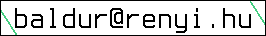

The geometric genus and the Seiberg-Witten invariant of Newton
nondegenerate surface singularities.
The geometric genus and the Seiberg-Witten invariant of Newton
nondegenerate surface singularities.
I have recently finished a PhD at CEU under the supervision of András Némethi. I'm working on normal surface singularities as part of the low dimensional topology team at the Alfréd Rényi Institute of Mathematics.
I finished a BS degree at The University of Iceland (HÍ) in 2008, an MS degree at Eötvös Loránd Tudományegyetem (ELTE) in 2010 and a PhD at Central European University (CEU) in 2015.
The geometric genus and the Seiberg-Witten invariant of Newton
nondegenerate surface singularities.
Slides presented during the defense.
Curriculum vitae.
 The geometric genus of hypersurface singularities. Joint with András
Némethi. Accepted for publication in The Journal of the European
Mathematical Society.
The geometric genus of hypersurface singularities. Joint with András
Némethi. Accepted for publication in The Journal of the European
Mathematical Society.
The Milnor fiber of the singularity f(x,y) + zg(x,y) = 0.
The geometric genus of hypersurfaces, presented on the
13th International Workshop on Real and Complex Singularities
Celebrating the 60th birthday of
María del Carmen Romero Fuster July 27th - August 1st 2014.

 A program for calculating invariants related to lattice cohomology.
A program for calculating invariants related to lattice cohomology.
 A collection of functions related to numerical invariants of surface
singularities written in PARI/GP. Includes an implementation of Oka's
algorithm. Be warned that the function that calculates the Turaev torsion
is flaky. I'll have to redo that whole thing, but until then, don't take it
as absolute truth. In particular, the Seiberg-Witten invariant may be
incorrect.
A collection of functions related to numerical invariants of surface
singularities written in PARI/GP. Includes an implementation of Oka's
algorithm. Be warned that the function that calculates the Turaev torsion
is flaky. I'll have to redo that whole thing, but until then, don't take it
as absolute truth. In particular, the Seiberg-Witten invariant may be
incorrect.
 Here are some notes on various issues. I'm mostly
collecting them here for myself, but maybe they are of help to others.
Here are some notes on various issues. I'm mostly
collecting them here for myself, but maybe they are of help to others.
